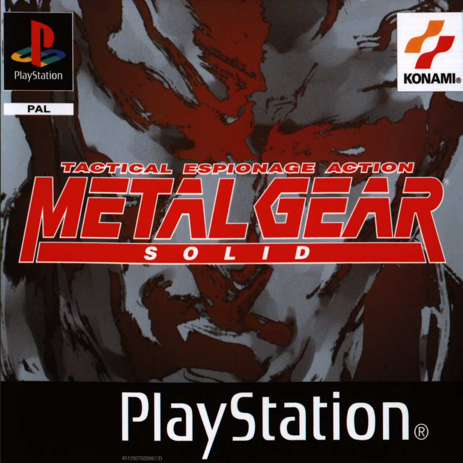
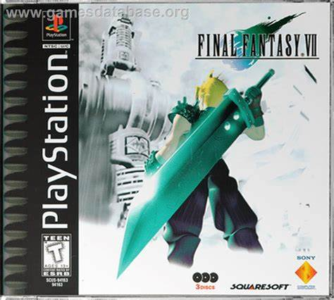
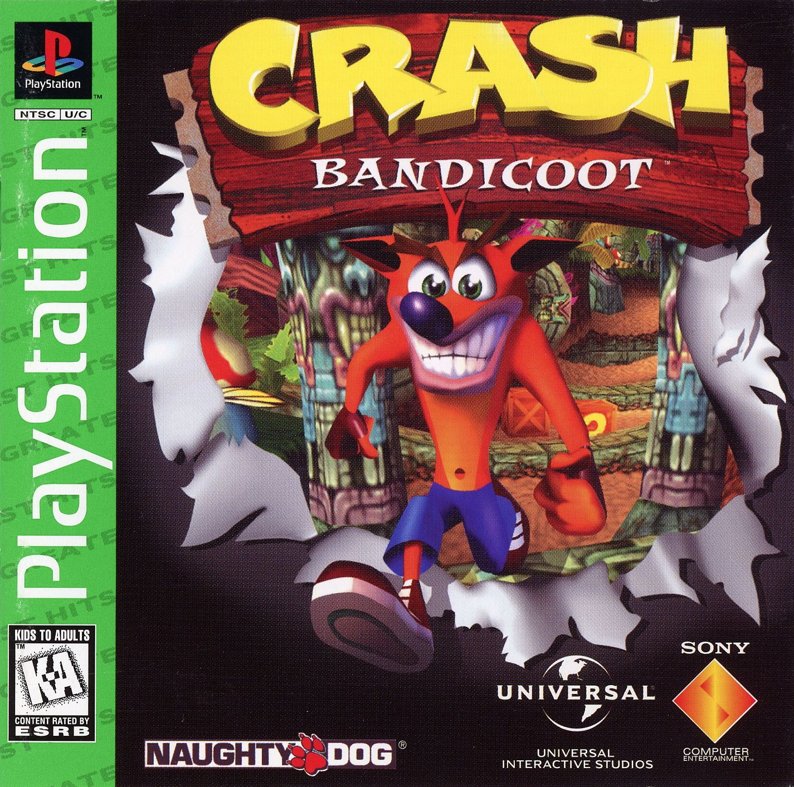

Início e Desenvolvimento:
O PlayStation original, também conhecido como PS1 ou PSOne, foi lançado pela Sony em 3 de dezembro de 1994 no Japão, 9 de setembro de 1995 nos Estados Unidos e em 29 de setembro de 1995 na Europa. O desenvolvimento do console começou após uma parceria fracassada com a Nintendo para desenvolver um CD-ROM para o Super Nintendo. A Sony decidiu seguir em frente com o projeto por conta própria, o que resultou no nascimento do PlayStation.
Design e Tecnologia:
O PS1 era conhecido por seu design elegante e por utilizar CDs para rodar jogos, o que permitia gráficos em 3D e som de qualidade superior. Essa foi uma grande mudança em relação aos cartuchos usados por outros consoles da época. O console tinha uma CPU MIPS R3000 a 33,8688 MHz e capacidade gráfica de 32-bits.
Jogos Icônicos:
O PS1 hospedou uma variedade de jogos que se tornaram icônicos na indústria dos videogames. Aqui estão alguns dos mais notáveis:
|  |  |
|
|
 |
Impacto e Legado:
O PS1 foi um sucesso imediato, popularizando o uso de CDs e estabelecendo a Sony como uma potência na indústria de jogos eletrônicos. Ao longo de sua vida, vendeu mais de 100 milhões de unidades e preparou o caminho para futuras gerações de consoles PlayStation. O PS1 ocupa a posição de sexto console mais vendido no mundo, com mais de cem milhões de unidades vendidas. Foi sucedido pelo PlayStation 2, que teve mais de 150 milhões de unidades comercializadas.
Modelos e Sucessores:
Em julho de 2000, uma versão melhorada e mais fina chamada de PS One foi lançada, substituindo o console cinza original e nomeado apropriadamente para evitar confusão com seu sucessor, o PlayStation 2.
Presença no Brasil :
O PlayStation chegou ao Brasil em 11 de Novembro de 1997 e teve uma recepção calorosa, tornando-se rapidamente um dos consoles mais populares do país.
Propaganda do Ps1:
Intro lendária: